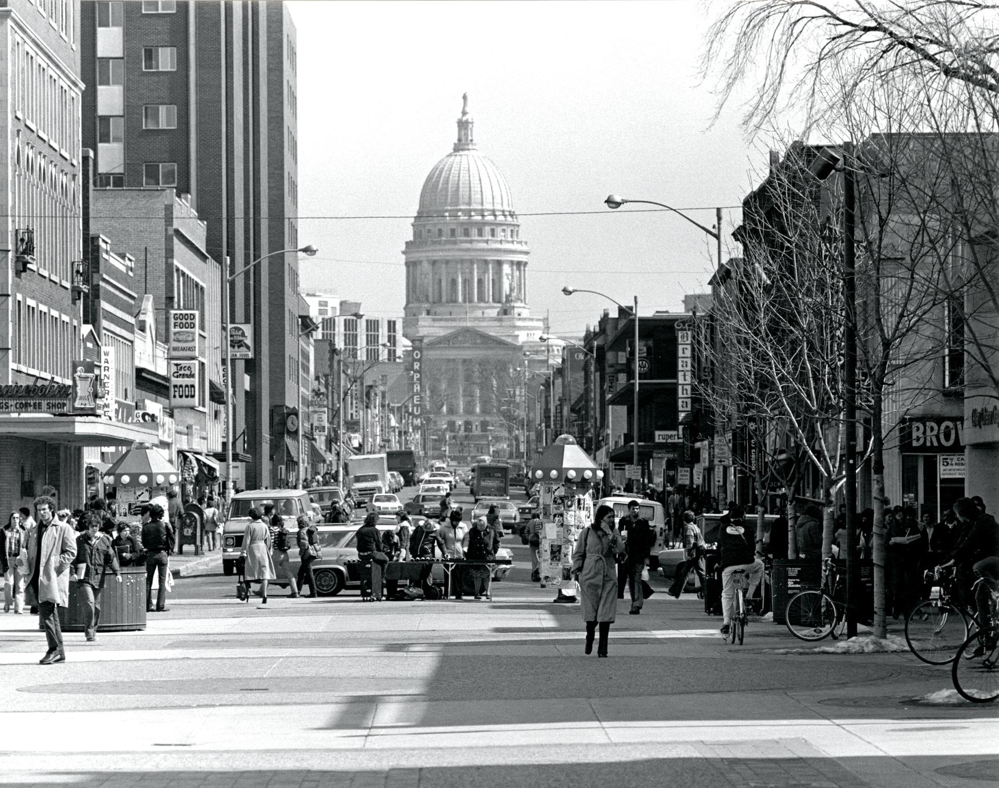

VII
State Street
From Library Mall to the Square
Then · c. 1925

State Street in the 1920s, when streetcars were allowed.
Now

State street in the modern day.
State Street has always linked the university to the rest of Madison. Streetcars once ran down it, and during the Dow protests in October 1967, police rushed through this part of campus and used tear gas at the Commerce Building. Later, the same street held marches, vigils, parades, markets, and all the ordinary days in between. The Capitol has watched over it the whole time.
"It was not a story to pass on." Narrator, Beloved